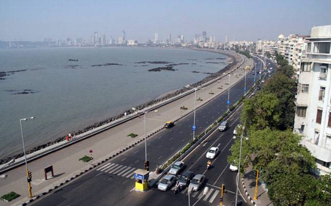
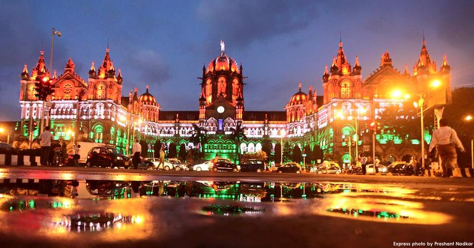

Welcome to Regal Palace
The Hotel Regal Palace is the right choice for visitors who are searching for a combination of charm, peace and quiet, and a convenient position from which to explore Mumbai. It is a small, comfortable hotel, situated at Charni Road. The Derai family and their staff offer an attentive, personalized service and are always available to offer any help to guests.
The hotel is arranged on three floors, without a lift. On the ground floor, apart from the reception, there is a comfortable lounge where you can sit and drink tea, or just read. There is also a splendid terrace, where, you can relax and immerge yourself from morning onwards in the atmosphere of Mumbai daily life, watching the city travelling via various means and many more.
The rooms are arranged on the first, second and third floors. On the top floor, there is also a delightful terrace or solarium available for the use of guests, from where you can enjoy the wonderful view.
The buffet breakfast is served in the lounge on the ground floor.
The hotel provides an internet point, and a Wi-Fi service.
Popular Sites to visit

Marine Drive

Gateway Of India

Chhatrapati Shivaji Maharaj Terminus(CST)